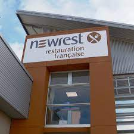
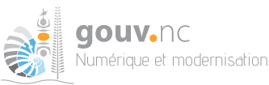
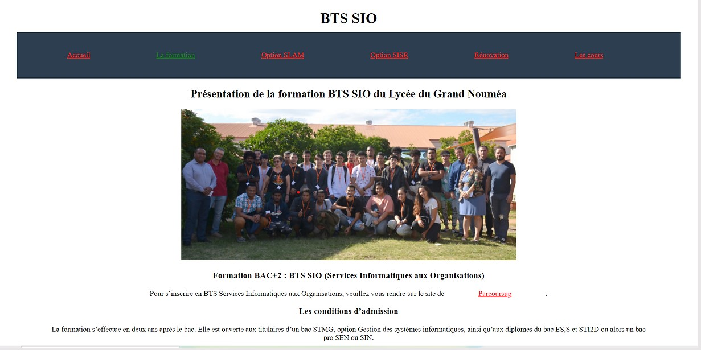
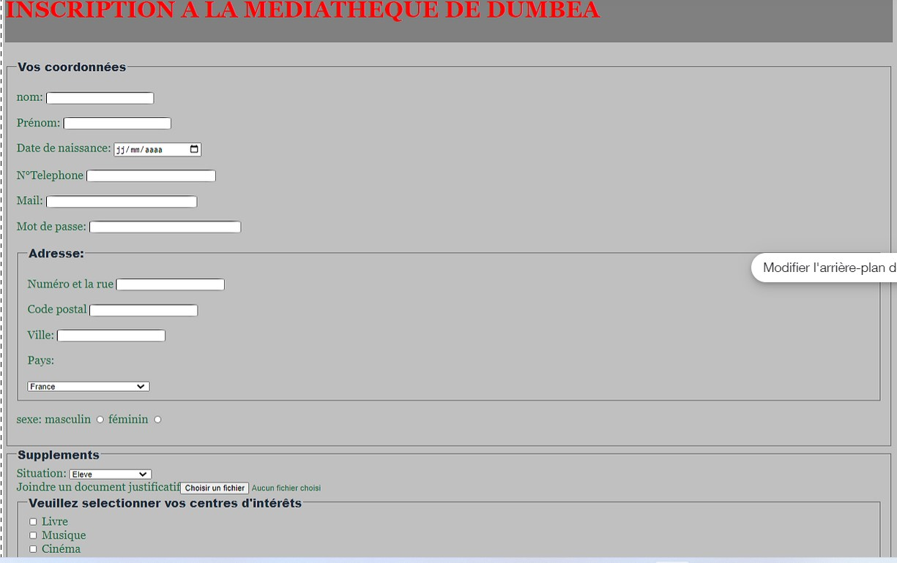
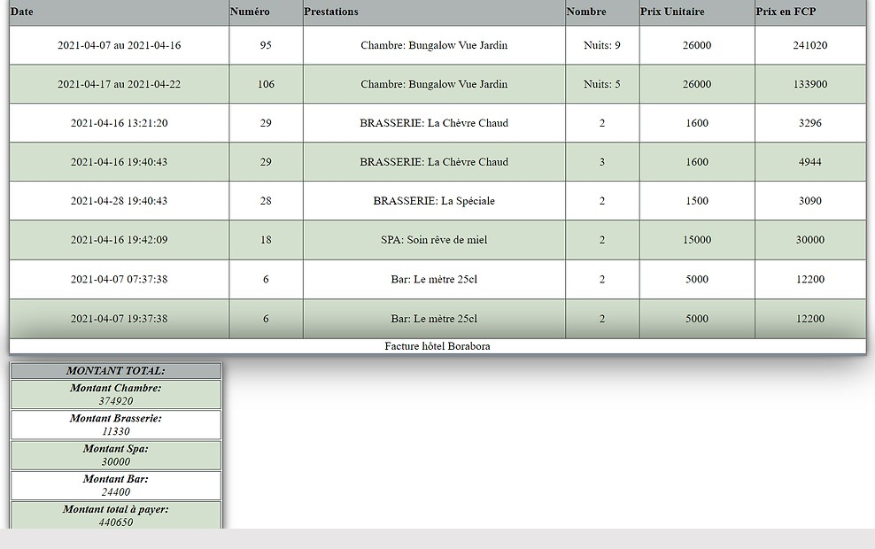
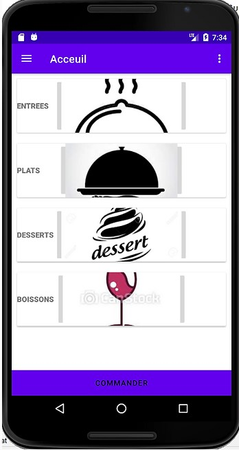

Stage à Newrest Du 09 novembre au 11 décembre 2020 Missions effectuées: - Inventaire du parc informatique - Modification du message d'attente téléphonique - Dépannage système de sauvegarde serveur - Prise connaissance du logiciel "Winrest" - Mise à jour sur le logiciel "Sohorsys" - Installation Windows 10 - Mise en place du MFA(Multi-Facteur-Authentification) - Suivi d'un dépannage à distance avec TeamViewver
Stage à la DINUM Du 05 juillet 2021 au 06 août 2021 Missions effectuées: - Travail sur le client lourd "Pacifsc" et l'application web "Selfisc" développé en JAVA des services fiscaux de la NC - Ajout de nouvelles fonctionnalités - Gestion de bugs et de messages d'erreurs
Projet développemnt site bts sio(Cours) Par équipe de deux étudiants Missions effectuées: - Création de différentes pages HTML: page d'accueil, option SLAM, option SISR, rénovation, formation, cours - Ajout du css - Répartition des tâches avec mon parteniare
Projet développement d'un formulaire pour la médiathèque(Cours) Projet personnel Missions effectuées: - Création d'un formulaire d'inscription pour la médiathèque - Travail du HTML et du CSS - Récupération des données avec du PHP - Création d'une base de donnée SQL
Projet développement d'une fonctionnalité de facturation(Cours) Projet personnel Missions effectuées: - Inclure dans un site-restaurant un programme de facturation. - Modification de la base de donnée et mise en oeuvre de l'interface. - Travail du HTML, CSS, PHP, SQL.
Projet développement d'une application mobile de prise de commande(Cours) Projet personnel Missions effectuées: - Développer une application mobile permettant de prendre les commandes du restaurant BORABORA - Une interface sécurisée pour mettre à jour la carte du restaurant - Si c'est un client de l'hôtel, ajouter sa commande à sa facture dans la base de donnée - Travail du JAVA, PHP, MySQL, librairie Volley(Envoi des données en POST)
